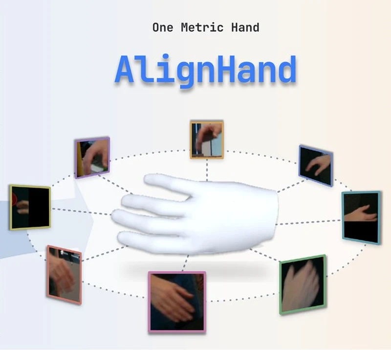
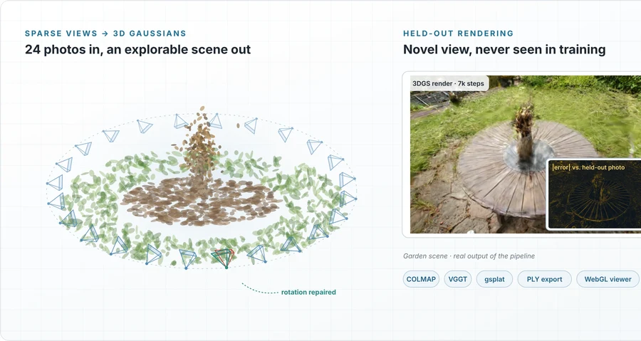

About Me
I work on 3D computer vision: multi-view geometry, 3D reconstruction and camera pose
estimation. I am interested in recovering reliable metric 3D geometry when views,
models or detectors disagree or fail.
Selected Research

AlignHand: Multi-View Hand Reconstruction from a Frozen Monocular Prior
Zhilu Yang, Kun Yang, Shiyan Wang, Anqi Xu, Xinran Huang, Yizheng Jiao, Huan Yang, Rolandos Alexandros Potamias
Preprint, 2026
Turns conflicting per-view predictions of a frozen monocular hand model into one metric hand mesh, with 30% lower vertex error than a matched geometric baseline.
[Project Page]
[Paper]
[Code]
EviPose: Evidence-Driven Two-View Relative Pose Estimation
Ongoing research
Complementary geometric observations, task-aligned pose recovery and evidence-based fallback, evaluated on MegaDepth-1500, ScanNet-1500 and RUBIK.
PlaceHand: Monocular 3D Hand Reconstruction and Camera-Space Placement
Ongoing research
Places the hand in metric camera space from one RGB image, with detection-aware recovery when the hand detector fails.
Open Source

Robust Sparse 3DGS: Sparse-View Reconstruction under Camera Perturbation
A COLMAP / VGGT → gsplat pipeline with held-out evaluation and a WebGL viewer; rotation-only camera correction recovers over 96% of injected rotation error.
[Code]